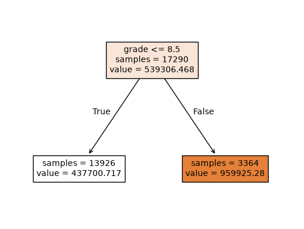
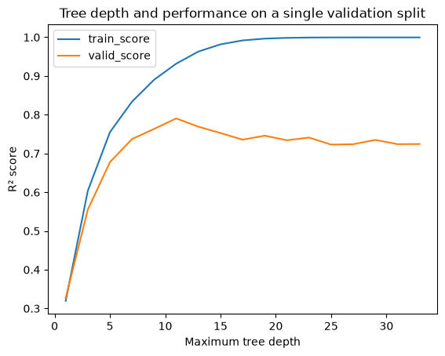
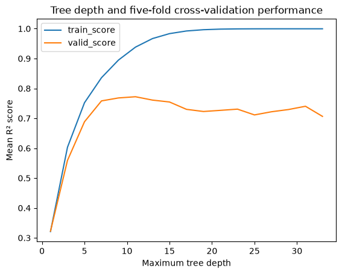

from pathlib import Path
import matplotlib.pyplot as plt
import numpy as np
import pandas as pd
from sklearn.dummy import DummyRegressor
from sklearn.model_selection import cross_validate, train_test_split
from sklearn.tree import DecisionTreeRegressor, plot_tree
RANDOM_STATE = 123Lecture 3 demo: ML fundamentals
Varada Kolhatkar
Lecture 3 Class Demo
Let’s use housing prices to investigate a question from last lecture: does a great training score mean we have a useful model?
We’ll build a first model, question how we evaluated it, and improve our workflow together. The opening steps are deliberately naive: we explore and fit on all the data before introducing splitting. By the end, we’ll explain what we would do differently on a fresh project.
How to use this notebook: pause at the questions before running the next cell. Code cells marked TODO contain the worked solution for now; try describing or writing your approach before reading it. You can hide the solution while we work together.
Run cells in order in JupyterLab or VS Code. Put kc_house_data.csv in a data folder beside this notebook, and use a kernel with NumPy, pandas, Matplotlib, and scikit-learn installed.
The prediction problem
The King County housing dataset contains records of house sales, including sale prices and information about each property. The data are available from House Sales in King County, USA.
Imagine that we want to estimate a property’s sale price from its recorded characteristics.
data_path = Path("data/kc_house_data.csv")
housing_df = pd.read_csv(data_path)
housing_df.head()| id | date | price | bedrooms | bathrooms | sqft_living | sqft_lot | floors | waterfront | view | ... | grade | sqft_above | sqft_basement | yr_built | yr_renovated | zipcode | lat | long | sqft_living15 | sqft_lot15 | |
|---|---|---|---|---|---|---|---|---|---|---|---|---|---|---|---|---|---|---|---|---|---|
| 0 | 7129300520 | 20141013T000000 | 221900.0 | 3 | 1.00 | 1180 | 5650 | 1.0 | 0 | 0 | ... | 7 | 1180 | 0 | 1955 | 0 | 98178 | 47.5112 | -122.257 | 1340 | 5650 |
| 1 | 6414100192 | 20141209T000000 | 538000.0 | 3 | 2.25 | 2570 | 7242 | 2.0 | 0 | 0 | ... | 7 | 2170 | 400 | 1951 | 1991 | 98125 | 47.7210 | -122.319 | 1690 | 7639 |
| 2 | 5631500400 | 20150225T000000 | 180000.0 | 2 | 1.00 | 770 | 10000 | 1.0 | 0 | 0 | ... | 6 | 770 | 0 | 1933 | 0 | 98028 | 47.7379 | -122.233 | 2720 | 8062 |
| 3 | 2487200875 | 20141209T000000 | 604000.0 | 4 | 3.00 | 1960 | 5000 | 1.0 | 0 | 0 | ... | 7 | 1050 | 910 | 1965 | 0 | 98136 | 47.5208 | -122.393 | 1360 | 5000 |
| 4 | 1954400510 | 20150218T000000 | 510000.0 | 3 | 2.00 | 1680 | 8080 | 1.0 | 0 | 0 | ... | 8 | 1680 | 0 | 1987 | 0 | 98074 | 47.6168 | -122.045 | 1800 | 7503 |
5 rows × 21 columns
❓❓ Questions for you
Discuss before coding
- What does one example represent? What is the target?
- Is this a classification problem or a regression problem?
- What would it mean for this model to generalize?
Exploratory Data Analysis (EDA)
Before building anything, let’s get to know these house sales.
TODO: take a first look. How many rows and columns do we have? What do the summaries and missing-value counts tell us?
We’re using the full dataset in this opening demonstration. On a fresh project, we would reserve test data before EDA. Keep track of this shortcut—we’ll return to it at the end.
# How many data points do we have?
housing_df.shape[0]21613# What are the columns in the dataset?
housing_df.columnsIndex(['id', 'date', 'price', 'bedrooms', 'bathrooms', 'sqft_living',
'sqft_lot', 'floors', 'waterfront', 'view', 'condition', 'grade',
'sqft_above', 'sqft_basement', 'yr_built', 'yr_renovated', 'zipcode',
'lat', 'long', 'sqft_living15', 'sqft_lot15'],
dtype='str')What ranges do the numerical features have? Let’s try describe() and info().
housing_df.describe()| id | price | bedrooms | bathrooms | sqft_living | sqft_lot | floors | waterfront | view | condition | grade | sqft_above | sqft_basement | yr_built | yr_renovated | zipcode | lat | long | sqft_living15 | sqft_lot15 | |
|---|---|---|---|---|---|---|---|---|---|---|---|---|---|---|---|---|---|---|---|---|
| count | 2.161300e+04 | 2.161300e+04 | 21613.000000 | 21613.000000 | 21613.000000 | 2.161300e+04 | 21613.000000 | 21613.000000 | 21613.000000 | 21613.000000 | 21613.000000 | 21613.000000 | 21613.000000 | 21613.000000 | 21613.000000 | 21613.000000 | 21613.000000 | 21613.000000 | 21613.000000 | 21613.000000 |
| mean | 4.580302e+09 | 5.400881e+05 | 3.370842 | 2.114757 | 2079.899736 | 1.510697e+04 | 1.494309 | 0.007542 | 0.234303 | 3.409430 | 7.656873 | 1788.390691 | 291.509045 | 1971.005136 | 84.402258 | 98077.939805 | 47.560053 | -122.213896 | 1986.552492 | 12768.455652 |
| std | 2.876566e+09 | 3.671272e+05 | 0.930062 | 0.770163 | 918.440897 | 4.142051e+04 | 0.539989 | 0.086517 | 0.766318 | 0.650743 | 1.175459 | 828.090978 | 442.575043 | 29.373411 | 401.679240 | 53.505026 | 0.138564 | 0.140828 | 685.391304 | 27304.179631 |
| min | 1.000102e+06 | 7.500000e+04 | 0.000000 | 0.000000 | 290.000000 | 5.200000e+02 | 1.000000 | 0.000000 | 0.000000 | 1.000000 | 1.000000 | 290.000000 | 0.000000 | 1900.000000 | 0.000000 | 98001.000000 | 47.155900 | -122.519000 | 399.000000 | 651.000000 |
| 25% | 2.123049e+09 | 3.219500e+05 | 3.000000 | 1.750000 | 1427.000000 | 5.040000e+03 | 1.000000 | 0.000000 | 0.000000 | 3.000000 | 7.000000 | 1190.000000 | 0.000000 | 1951.000000 | 0.000000 | 98033.000000 | 47.471000 | -122.328000 | 1490.000000 | 5100.000000 |
| 50% | 3.904930e+09 | 4.500000e+05 | 3.000000 | 2.250000 | 1910.000000 | 7.618000e+03 | 1.500000 | 0.000000 | 0.000000 | 3.000000 | 7.000000 | 1560.000000 | 0.000000 | 1975.000000 | 0.000000 | 98065.000000 | 47.571800 | -122.230000 | 1840.000000 | 7620.000000 |
| 75% | 7.308900e+09 | 6.450000e+05 | 4.000000 | 2.500000 | 2550.000000 | 1.068800e+04 | 2.000000 | 0.000000 | 0.000000 | 4.000000 | 8.000000 | 2210.000000 | 560.000000 | 1997.000000 | 0.000000 | 98118.000000 | 47.678000 | -122.125000 | 2360.000000 | 10083.000000 |
| max | 9.900000e+09 | 7.700000e+06 | 33.000000 | 8.000000 | 13540.000000 | 1.651359e+06 | 3.500000 | 1.000000 | 4.000000 | 5.000000 | 13.000000 | 9410.000000 | 4820.000000 | 2015.000000 | 2015.000000 | 98199.000000 | 47.777600 | -121.315000 | 6210.000000 | 871200.000000 |
housing_df.info()<class 'pandas.DataFrame'>
RangeIndex: 21613 entries, 0 to 21612
Data columns (total 21 columns):
# Column Non-Null Count Dtype
--- ------ -------------- -----
0 id 21613 non-null int64
1 date 21613 non-null str
2 price 21613 non-null float64
3 bedrooms 21613 non-null int64
4 bathrooms 21613 non-null float64
5 sqft_living 21613 non-null int64
6 sqft_lot 21613 non-null int64
7 floors 21613 non-null float64
8 waterfront 21613 non-null int64
9 view 21613 non-null int64
10 condition 21613 non-null int64
11 grade 21613 non-null int64
12 sqft_above 21613 non-null int64
13 sqft_basement 21613 non-null int64
14 yr_built 21613 non-null int64
15 yr_renovated 21613 non-null int64
16 zipcode 21613 non-null int64
17 lat 21613 non-null float64
18 long 21613 non-null float64
19 sqft_living15 21613 non-null int64
20 sqft_lot15 21613 non-null int64
dtypes: float64(5), int64(15), str(1)
memory usage: 3.5 MBDoes a numerical dtype always mean a column should be treated as a numerical measurement?
# TODO: check whether any columns have missing values.
housing_df.isna().sum()id 0
date 0
price 0
bedrooms 0
bathrooms 0
sqft_living 0
sqft_lot 0
floors 0
waterfront 0
view 0
condition 0
grade 0
sqft_above 0
sqft_basement 0
yr_built 0
yr_renovated 0
zipcode 0
lat 0
long 0
sqft_living15 0
sqft_lot15 0
dtype: int64Which columns should we use?
Let’s discuss what each column represents, not just whether Python can accept it.
housing_df.head()| id | date | price | bedrooms | bathrooms | sqft_living | sqft_lot | floors | waterfront | view | ... | grade | sqft_above | sqft_basement | yr_built | yr_renovated | zipcode | lat | long | sqft_living15 | sqft_lot15 | |
|---|---|---|---|---|---|---|---|---|---|---|---|---|---|---|---|---|---|---|---|---|---|
| 0 | 7129300520 | 20141013T000000 | 221900.0 | 3 | 1.00 | 1180 | 5650 | 1.0 | 0 | 0 | ... | 7 | 1180 | 0 | 1955 | 0 | 98178 | 47.5112 | -122.257 | 1340 | 5650 |
| 1 | 6414100192 | 20141209T000000 | 538000.0 | 3 | 2.25 | 2570 | 7242 | 2.0 | 0 | 0 | ... | 7 | 2170 | 400 | 1951 | 1991 | 98125 | 47.7210 | -122.319 | 1690 | 7639 |
| 2 | 5631500400 | 20150225T000000 | 180000.0 | 2 | 1.00 | 770 | 10000 | 1.0 | 0 | 0 | ... | 6 | 770 | 0 | 1933 | 0 | 98028 | 47.7379 | -122.233 | 2720 | 8062 |
| 3 | 2487200875 | 20141209T000000 | 604000.0 | 4 | 3.00 | 1960 | 5000 | 1.0 | 0 | 0 | ... | 7 | 1050 | 910 | 1965 | 0 | 98136 | 47.5208 | -122.393 | 1360 | 5000 |
| 4 | 1954400510 | 20150218T000000 | 510000.0 | 3 | 2.00 | 1680 | 8080 | 1.0 | 0 | 0 | ... | 8 | 1680 | 0 | 1987 | 0 | 98074 | 47.6168 | -122.045 | 1800 | 7503 |
5 rows × 21 columns
Would id help predict a new property’s price? Compare the number of distinct IDs with the number of sales. Could a property appear more than once?
housing_df['id'].unique().shape[0]21436What could we learn from date? Would passing this raw string to a tree work?
housing_df['date']0 20141013T000000
1 20141209T000000
2 20150225T000000
3 20141209T000000
4 20150218T000000
...
21608 20140521T000000
21609 20150223T000000
21610 20140623T000000
21611 20150116T000000
21612 20141015T000000
Name: date, Length: 21613, dtype: strdates = pd.to_datetime(['20141013T000000', '20141209T000000', '20150218T000000'], format='%Y%m%dT%H%M%S')
dates.month_name()Index(['October', 'December', 'February'], dtype='str')Could location help? A ZIP code contains location information, but does a larger code mean ‘more’ of something?
housing_df['zipcode']0 98178
1 98125
2 98028
3 98136
4 98074
...
21608 98103
21609 98146
21610 98144
21611 98027
21612 98144
Name: zipcode, Length: 21613, dtype: int64What do you expect from waterfront? Check its value counts. How common are waterfront properties?
# What are the value counts of the `waterfront` feature?
housing_df['waterfront'].value_counts()waterfront
0 21450
1 163
Name: count, dtype: int64# What are the value_counts of `yr_renovated` feature?
housing_df['yr_renovated'].value_counts()yr_renovated
0 20699
2014 91
2013 37
2003 36
2005 35
...
1948 1
1951 1
1959 1
1934 1
1944 1
Name: count, Length: 70, dtype: int64For today, we’ll omit id, date, and zipcode to focus on evaluation. This is a teaching simplification, not a claim that dates or location are useless. We’ll revisit feature preparation later.
Your turn: separate inputs and target
TODO: create X without the target and the three omitted columns, and create y from price. Why must price stay out of X?
# TODO: try this step before reading the worked solution below.
X = housing_df.drop(columns = ['id', 'date', 'zipcode', 'price'])# TODO: try this step before reading the worked solution below.
y = housing_df['price']A baseline: predict the same price for every house
Before running: if you had to predict one price for everyone, what would you choose?
TODO: fit a DummyRegressor on X, y, inspect a few predictions, and score it on those same data. We have no validation set yet: this is a training score.
For these regressors, .score() returns R², not accuracy. Higher is better: 1 is perfect; 0 matches predicting the mean target of the evaluated data; negative values are possible. A baseline fitted on another subset need not score exactly 0 on held-out data.
# TODO: try this step before reading the worked solution below.
# Train a DummyRegressor model
from sklearn.dummy import DummyRegressor # Import DummyRegressor
# Create a class object for the sklearn model.
dummy_regr = DummyRegressor()
# fit the dummy regressor
dummy_regr.fit(X, y)
# score the model
dummy_regr.score(X, y)0.0Pause: why is this training score approximately zero? Does that mean none of the predicted prices are useful?
dummy_regr.predict(X.iloc[:5])array([540088.14176653, 540088.14176653, 540088.14176653, 540088.14176653,
540088.14176653])Can a decision tree do better?
Predict first: will its training score be higher than the baseline’s?
TODO: fit an unrestricted DecisionTreeRegressor on X, y and score it on the same examples.
# TODO: try this step before reading the worked solution below.
# Train a decision tree model
from sklearn.tree import DecisionTreeRegressor # Import DecisionTreeRegressor
# Create a class object for the sklearn model.
dt_regr = DecisionTreeRegressor(random_state=RANDOM_STATE)
# fit the decision tree regressor
dt_regr.fit(X, y)
# score the model
dt_regr.score(X, y)0.9991338290544213Intuition of regression trees
- In classification trees, a “good split” is one that makes each group more pure in terms of labels (e.g., mostly happy 🙂 vs. mostly unhappy 🙁).
- In regression trees, a good split is one that creates groups where the target values have low variance around their mean.
See the documentation for more details.
Stop and discuss
Our training score looks impressive. Would you deploy this model?
- Which examples did the model see during fitting?
- Have we measured performance on any unseen examples?
- What evidence would make you more confident?
What’s the depth of this model?
dt_regr.get_depth()38Data splitting
Our first score answered, ‘How well can the model fit data it has already seen?’ We want to ask, ‘How well will it predict new examples?’
Slide pause: connect training, validation, test, and deployment to practice questions, held-out practice questions, the exam, and interview questions.
TODO: split X, y into 80% training and 20% test data. Fit a fresh tree on training data only.
This keeps the new fit separate from the held-out rows, but does not undo our earlier full-data exploration. We’ll use this split to learn the mechanics; it is not a pristine final assessment.
# TODO: try this step before reading the worked solution below.
# Split the data
from sklearn.model_selection import train_test_split
X_train, X_test, y_train, y_test = train_test_split(X, y, test_size=0.2, random_state=RANDOM_STATE)X.shape, X_train.shape, X_test.shape((21613, 17), (17290, 17), (4323, 17))# Instantiate a class object
dt = DecisionTreeRegressor(random_state=RANDOM_STATE)
# Train a decision tree on X_train, y_train
dt.fit(X_train, y_train)
# Score on the train set
dt.score(X_train, y_train)0.9994394006711425# Score on the test set
dt.score(X_test, y_test)0.719915905190645What changed?
- How do the training and held-out scores compare? What could explain the gap?
- What do we gain and lose by reserving a larger test set?
- Why fix
random_state? Would searching for a favourable split improve the model or just its reported score?
TODO: also fit the dummy baseline on training data only. Compare its training and held-out scores with the tree’s.
# Compare with a baseline fitted only on the training subset.
dummy_split = DummyRegressor().fit(X_train, y_train)
pd.DataFrame({
"train_score": [dummy_split.score(X_train, y_train), dt.score(X_train, y_train)],
"held_out_score": [dummy_split.score(X_test, y_test), dt.score(X_test, y_test)],
}, index=["Dummy regressor", "Decision tree"])| train_score | held_out_score | |
|---|---|---|
| Dummy regressor | 0.000000 | -0.000108 |
| Decision tree | 0.999439 | 0.719916 |
Does limiting depth help?
Predict first: what will happen to both scores if we allow only one split?
TODO: fit a decision stump and inspect its split. We’re about to try model choices against the test set—watch for the evaluation problem this creates.
# TODO: try this step before reading the worked solution below.
# max_depth= 1
dt = DecisionTreeRegressor(max_depth=1, random_state=RANDOM_STATE)
dt.fit(X_train, y_train)DecisionTreeRegressor(max_depth=1, random_state=123)In a Jupyter environment, please rerun this cell to show the HTML representation or trust the notebook.
On GitHub, the HTML representation is unable to render, please try loading this page with nbviewer.org.
Parameters
Fitted attributes
# Visualize your decision stump
from sklearn.tree import plot_tree
plot_tree(dt, feature_names = X.columns.tolist(), impurity=False, filled=True, fontsize=10);
dt.score(X_train, y_train) # Score on the train set0.3209427041566191dt.score(X_test, y_test) # Score on the test set0.31767136668453344Discuss: are both scores poor, or is only the held-out score poor? What would support calling this underfitting?
Now allow max_depth=20. Predict before running: must both scores improve?
dt = DecisionTreeRegressor(max_depth=20, random_state=RANDOM_STATE)
dt.fit(X_train, y_train)DecisionTreeRegressor(max_depth=20, random_state=123)In a Jupyter environment, please rerun this cell to show the HTML representation or trust the notebook.
On GitHub, the HTML representation is unable to render, please try loading this page with nbviewer.org.
Parameters
Fitted attributes
dt.score(X_train, y_train) # Score on the train set0.9968347348881582dt.score(X_test, y_test) # Score on the test set0.7378551974307357Which depth looks more promising? Which dataset just influenced that choice?
Slide pause: underfitting, overfitting, the fundamental trade-off, and the golden rule. Use the exam analogy: learning too little versus memorizing practice-specific details.
Single validation set
We’ve been looking at test scores to compare depths. That turns the test set into part of model selection: it is no longer an independent final assessment.
Let’s introduce a validation set for further choices. This improves our workflow from here onward, but does not make the already-used test set fresh again.
TODO: reserve 20% of X_train, y_train for validation. What fractions of the original data are now used for fitting, validation, and testing?
# TODO: try this step before reading the worked solution below.
# Create a validation set
X_tr, X_valid, y_tr, y_valid = train_test_split(X_train, y_train, test_size=0.2, random_state=RANDOM_STATE)# TODO: try this step before reading the worked solution below.
tr_scores = []
valid_scores = []
depths = np.arange(1, 35, 2)
for depth in depths:
# Create and fit a decision tree model for the given depth
dt = DecisionTreeRegressor(max_depth=depth, random_state=RANDOM_STATE)
dt.fit(X_tr, y_tr)
# Calculate and append r2 scores on the training and validation sets
tr_scores.append(dt.score(X_tr, y_tr))
valid_scores.append(dt.score(X_valid, y_valid))
results_single_valid_df = pd.DataFrame({"train_score": tr_scores,
"valid_score": valid_scores},index = depths)
results_single_valid_df| train_score | valid_score | |
|---|---|---|
| 1 | 0.319559 | 0.326616 |
| 3 | 0.603739 | 0.555180 |
| 5 | 0.754938 | 0.677567 |
| 7 | 0.833913 | 0.737285 |
| 9 | 0.890456 | 0.763480 |
| 11 | 0.931896 | 0.790521 |
| 13 | 0.963024 | 0.769030 |
| 15 | 0.981643 | 0.752728 |
| 17 | 0.991810 | 0.735637 |
| 19 | 0.996424 | 0.745925 |
| 21 | 0.998370 | 0.734048 |
| 23 | 0.999213 | 0.741060 |
| 25 | 0.999480 | 0.722873 |
| 27 | 0.999544 | 0.723951 |
| 29 | 0.999558 | 0.734986 |
| 31 | 0.999562 | 0.724068 |
| 33 | 0.999567 | 0.724410 |
# Plot the scores collected above.
results_single_valid_df.plot(
xlabel="Maximum tree depth",
ylabel="R² score",
title="Tree depth and performance on a single validation split",
)
plt.show()
Read the plot together
- Where do you see evidence of underfitting or overfitting? Use both scores.
- Does extra depth always improve validation performance?
- Which depth would you choose?
- Would another validation split lead to the same choice?
# TODO: try this step before reading the worked solution below.
# What depth gives the "best" validation score?
best_depth = results_single_valid_df['valid_score'].idxmax()
best_depthnp.int64(11)Would another split tell the same story?
Slide pause: five-fold cross-validation. Each configuration is fitted five times, with a different fold held out each time.
TODO: compare the same depths with five-fold CV on X_train, y_train. Record mean training score, mean validation score, and validation-score standard deviation.
Before running: - Does test_score in cross_validate mean our final test set? - How many fits will 17 candidate depths require? - Why use X_train rather than the smaller X_tr?
depths = np.arange(1, 35, 2)
depthsarray([ 1, 3, 5, 7, 9, 11, 13, 15, 17, 19, 21, 23, 25, 27, 29, 31, 33])# TODO: compare depths using five-fold CV (worked solution below).
cv_train_scores = []
cv_valid_scores = []
cv_valid_stds = []
for depth in depths:
dt = DecisionTreeRegressor(max_depth=depth, random_state=RANDOM_STATE)
results = cross_validate(
dt, X_train, y_train, return_train_score=True
)
cv_train_scores.append(results['train_score'].mean())
# Here test_score refers to validation folds, not X_test.
cv_valid_scores.append(results['test_score'].mean())
cv_valid_stds.append(results['test_score'].std())cv_results_df = pd.DataFrame({
"train_score": cv_train_scores,
"valid_score": cv_valid_scores,
"valid_std": cv_valid_stds,
}, index=depths)
cv_results_df.index.name = "max_depth"
cv_results_df| train_score | valid_score | valid_std | |
|---|---|---|---|
| max_depth | |||
| 1 | 0.321050 | 0.322465 | 0.026939 |
| 3 | 0.603243 | 0.559284 | 0.017880 |
| 5 | 0.752169 | 0.688484 | 0.015447 |
| 7 | 0.835876 | 0.758259 | 0.025574 |
| 9 | 0.894960 | 0.768184 | 0.019748 |
| 11 | 0.938201 | 0.772185 | 0.022939 |
| 13 | 0.966812 | 0.760966 | 0.011522 |
| 15 | 0.983340 | 0.754620 | 0.017938 |
| 17 | 0.992220 | 0.730025 | 0.036612 |
| 19 | 0.996487 | 0.722803 | 0.028504 |
| 21 | 0.998440 | 0.726659 | 0.038662 |
| 23 | 0.999178 | 0.730704 | 0.015303 |
| 25 | 0.999438 | 0.711356 | 0.024054 |
| 27 | 0.999518 | 0.721917 | 0.022388 |
| 29 | 0.999539 | 0.729374 | 0.013672 |
| 31 | 0.999545 | 0.740319 | 0.012144 |
| 33 | 0.999546 | 0.706489 | 0.030473 |
cv_results_df[["train_score", "valid_score"]].plot(
xlabel="Maximum tree depth",
ylabel="Mean R² score",
title="Tree depth and five-fold cross-validation performance",
)
plt.show()
TODO: find the depth with the highest mean CV score. Is a tiny improvement enough to prefer a much deeper tree?
# TODO: try this step before reading the worked solution below.
best_depth = cv_results_df['valid_score'].idxmax()
best_depthnp.int64(11)❓❓ Questions for you
Discuss the following questions with your neighbour
- How does this comparison differ from the single validation split?
- How much do validation scores vary across folds? How does that affect your confidence in small differences between depths?
- If a shallower tree scores nearly as well as the highest-scoring tree, which would you choose? Explain.
- Have we found the best possible depth, or the best choice according to a particular comparison?
Refit the selected configuration and evaluate
Before running: fix your chosen depth and explain why you chose it.
TODO: fit a fresh tree on all non-test training data, then evaluate it on the test set. Why do we refit instead of keeping one of the CV models?
In a fresh workflow, this would be our first look at test performance. Here, we already used these data during EDA and model comparisons, so this score is illustrative—not an independent final estimate. A new independent evaluation would be needed for that claim.
# TODO: record your choice before looking at the final score.
selected_depth = int(best_depth)
selection_reason = "Highest mean validation R² among the depths compared with CV."
print(f"Selected depth: {selected_depth}. {selection_reason}")
# Refit on all non-test training data.
dt_final = DecisionTreeRegressor(max_depth=selected_depth, random_state=RANDOM_STATE)
dt_final.fit(X_train, y_train)
dt_final.score(X_train, y_train)Selected depth: 11. Highest mean validation R² among the depths compared with CV.0.9308647034083802# TODO: try this step before reading the worked solution below.
# Evaluate on the test set
dt_final.score(X_test, y_test)0.7784948928666875How does this score compare with the CV estimate? What might explain a difference?
If we now changed the depth because of this score, which role would the test set be playing?
Optional: what features did the tree use?
#What's the depth of the model?
dt_final.get_depth()11# plot_tree(dt_final, feature_names = X_train.columns.tolist(), impurity=False, filled=True);# Which features are the most important ones?
dt_final.feature_importances_array([0.00080741, 0.00327551, 0.25123925, 0.01808825, 0.00079645,
0.03213916, 0.01190633, 0.00106308, 0.36400802, 0.02313684,
0.00295235, 0.01209545, 0.00064647, 0.17216105, 0.06835056,
0.02416048, 0.01317334])TODO: pair each importance with its feature name and sort the table. Which features does this tree rely on most?
These are impurity-based importances for this fitted tree. They do not establish causation; correlated features can share importance, and features with many possible splits can be favoured. If this exploration motivates another modeling choice, return to validation.
# TODO: try this step before reading the worked solution below.
df = pd.DataFrame(
data = {
"features": dt_final.feature_names_in_,
"feature_importances": dt_final.feature_importances_
}
)
df.sort_values("feature_importances", ascending=False)| features | feature_importances | |
|---|---|---|
| 8 | grade | 0.364008 |
| 2 | sqft_living | 0.251239 |
| 13 | lat | 0.172161 |
| 14 | long | 0.068351 |
| 5 | waterfront | 0.032139 |
| 15 | sqft_living15 | 0.024160 |
| 9 | sqft_above | 0.023137 |
| 3 | sqft_lot | 0.018088 |
| 16 | sqft_lot15 | 0.013173 |
| 11 | yr_built | 0.012095 |
| 6 | view | 0.011906 |
| 1 | bathrooms | 0.003276 |
| 10 | sqft_basement | 0.002952 |
| 7 | condition | 0.001063 |
| 0 | bedrooms | 0.000807 |
| 4 | floors | 0.000796 |
| 12 | yr_renovated | 0.000646 |
Looking back: what did we learn?
Discuss with a neighbour:
- Why wasn’t the initial training score enough?
- When did our test set start influencing model selection?
- Why didn’t creating a validation set later undo that?
- What did CV add beyond one validation split?
- Where did you see underfitting or overfitting?
The workflow to take away
On a fresh project:
- Define the prediction task and reserve a test set using an appropriate split.
- Explore the training data and prepare features.
- Establish a baseline; compare models and hyperparameters using CV on the training data. Learn any preprocessing within each training fold.
- Fix the configuration and refit on all training data.
- Evaluate on the untouched test set.
- Optionally inspect feature importances to understand the fitted model.
The golden rule: test data must not guide training or model selection.
Our opening shortcuts helped us discover this workflow. They are not steps to copy into a final evaluation.